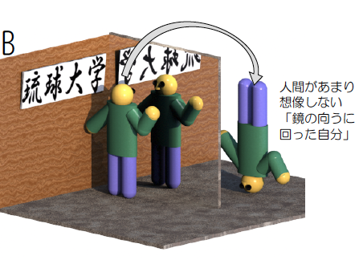
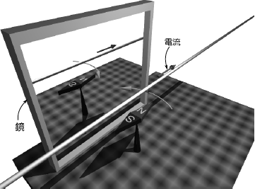

鏡は左右を反転する？
動く図で鏡の世界をみてみましょう。
↓の図は、ドラッグすることで視点の移動／拡大縮小などができます。
反転というのはもちろん、「前後、上下、左右などの位置関係がひっくり変えること」です。では今の２枚の図の場合、位置関係がひっくり返っているのはそれぞれ、何でしょう。ここで示した図の場合、実は左右は反転していません。右にある右手は鏡の中にでも右にあります！

よく考えてみると、これらの図に描かれた鏡はどちらも、実は左右を反転していないことがわかります。鏡が反転しているのは、常に鏡に対して垂直な方向なのです。それなのになぜ我々は左右が反転している、と思うのでしょうか。それは無意識のうちに我々が「鏡の裏側に回ったら」ということを仮定しているからです。

上のプログラムで鏡に入る（右から）というボタンを押すと、動く図で鏡に回りこむ様子が見えます。
つまり、「鏡の裏に回った自分」を思い浮かべ、それと鏡像を比べた結果「あ、左右が反転している」と判断しているのです。当然のことながら、自分が鏡の向こう側に回るとき、違う回り方をすれば上下が反転しているように見えるはずです。

上のプログラムで鏡に入る（下から）というボタンを押すと、動く図で鏡に回りこむ様子が見えます。
すいません、テキストの説明とプログラムでは動きは違います。
鏡の中の物理法則
反転世界での運動---宇宙人に「左」を教えるには？
鏡の話が片付いたところで、次のような問題を考えてみましょう。
左右反転した映像を見せられたとして、我々はそれが鏡像だということに気付くことができるか？
もちろん字が書いてあったらわかるにきまっているので、そういうのはなしとしましょう。たとえば箸を左手に持っていたらわかる？？---でも、その人は左利きかもしれませんよね。
どのような運動を考えてみても、それを反転した運動というのも同じように起こると思われます。実は物理法則というのはほとんどが左右対称にできています。物理法則がそうなっているということは、物理現象の説明をしている限り、「右」と「左」を区別する必要はない---どころか、区別できない---ということを表しています。

「宇宙人と音声で通信している時、右と左を教える方法はあるか？」という問題があります。相手は宇宙人ですから「箸を持つ方が右」ではだめだし、「心臓が左」でもだめです（そもそも宇宙人に心臓があるのか？）。
アンペアという電流の単位にその名前を残す物理学者アンペールは、電流が磁界を作る時の法則を発見した人でもあります。彼は同時に、電磁気における左右対称についても悩んだ人でした。彼を悩ませたのは、電流によって生じる磁界です。電流があると、それに対して右ねじの方向に磁界ができる、というのが右ねじの法則です。これを鏡に映すと、左ねじの方向に磁界ができているように見えてしまいます。たとえば図のように磁石と電流を置いておくと磁石は反時計まわりの方向に力を受けます。
このことを使うと、「磁石の上に電流を流した時、N極の針が振れる方向が左だ」と教えてやれば宇宙人に左と右が伝えられる---でしょうか？---でも「NとS」をどう伝えるか？？
では、動画で磁石の動きを見てみましょう。
↓の図は、マウスを使って視点の移動／拡大縮小などができます。
この図も「琉球大学」が読めるのが我々の世界で、読めないのが鏡の中の世界です。電流が流れると「右ネジの法則」に従って磁界ができて、磁石が（方位磁石のように）傾きます。鏡に映すと、磁石の傾く向きが逆になります（ということは、鏡の中では「左ネジの法則」が成り立っている？？